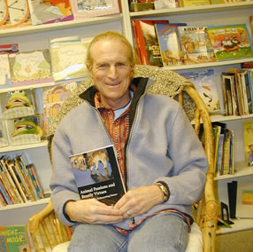

REVIEWS | EXCERPT | CONTENTS | AUTHOR BIO | SUBJECT CATEGORIES
An engaging, thoughtful look at the science and ethics of research into animal behavior
Animal Passions and Beastly Virtues
Reflections on Redecorating Nature
Search the full text of this book
Marc Bekoff, foreword by Jane Goodall
"Serves as an excellent summation of the major theme of Bekoff's many books....These essays not only explain his concern for how humans 'redecorate' nature by using animals for their own purposes but also achieve his goal of appealing to academic and popular audiences though his 'musings' on science, social responsibility and 'who we are in the grand scheme of things.'"
—Publishers Weekly
What is it really like to be a dog? Do animals experience emotions like pleasure, joy, and grief? Marc Bekoff's work draws world-wide attention for its originality and its probing into what animals think about and know as well as what they feel, what physical and mental skills they use to live successfully within their social community. Bekoff's work, whether addressed to scientists or the general public, demonstrates that investigations into animal thought, emotions, self-awareness, behavioral ecology, and conservation biology can be compassionate as well as scientifically rigorous.
In Animal Passions and Beastly Virtues, Bekoff brings together essays on his own ground-breaking research and on what scientists know about the remarkable range and flexibility of animal behavior. His fascinating and often amusing observations of dogs, wolves, coyotes, prairie dogs, elephants, and other animals playing, leaving and detecting scent-marks ("yellow snow"), solving problems, and forming friendships challenge the idea that science and the ethical treatment of animals are incompatible.
Excerpt
Read the Foreword and an excerpt from the Introduction (pdf).
Reviews
"Animal Passions and Beastly Virtues is a book for scientists and non-scientists alike. The writing is clear so that even complex subjects can be readily understood by the general public. Marc has the courage of his convictions and is an excellent spokesman for animals. He has learned so much from watching animals and empathizing with them, and by publishing this collection of essays, he hopes to share this knowledge with as many people as possible. I will share Animal Passions and Beastly Virtues with colleagues and friends around the world."
—Jane Goodall
"Whether it's hard empirical data or careful reasoning you cannot escape Marc Bekoff's conclusion: We must wage peace with our fellow animals and the whole of Nature. Bekoff's book is an inspiration and evidence that a new day of compassion is dawning. What else can explain how this very respected scientist has managed to integrate his heart and mind into one compassionate and caring being? Now we can only hope that those who have dissociated themselves from the reality of biology become whole again."
—Roger Fouts, co-director (with Deborah Fouts) of the Chimpanzee and Human Communication Institute and author of Next of Kin
"Marc Bekoff is that rarest of scientists: a world-renowned, disciplined thinker whose commitment to detail and rigor does not get in the way of the compassion and love he brings to his work and the animals who figure so prominently in it. Voiceless animals are very fortunate to have him speaking for them, and we are no less fortunate to have him writing for us. Animal Passions and Beastly Virtues is a must read."
—Tom Regan, author of Empty Cages: Facing the Challenge of Animal Rights
"Why is walking a dog different than riding [in] a car? Our connection with animals arises from us having similar bodies, needs, and emotions. Marc Bekoff eloquently stresses this kinship and the sensitivity that comes with it—or ought to come with it—in a book full of fresh insights into the inner lives of animals."
—Frans de Waal, author of Our Inner Ape
"This is a thought-provoking book that forces the reader to consider issues that are important but are often left at the fringes of our work.... Marc Bekoff, by forcing us to consider animal minds and our ethical obligations to animals, is pushing the field of behaviour in interesting directions."
—Nature
"[O]ne of his gems is his view on how we should interact with animals. He says, 'Do no intentional harm; respect all life; treat all individuals with compassion; and step lightly into the lives of other beings, bodies of water, and landscapes.'"
—BBC Wildlife
"Bekoff brings together some of the most important findings he has presented throughout his career as a biologist and animal behaviorist.... [He] successfully challenges traditional reviews of animal behavior."
—Animal Welfare Institute Quarterly
"Bekoff has established himself as an excellent researcher in behavioral ecology. He has made strong contributions to our understanding of the ecology and behavior of carnivores...and this book is a nice review of his past work.... Bekoff builds a convincing case that scientists must understand the larger social and political ramifications of their research... Readers who are generally interested in the topics of animal rights and the ethics of conducting science on animals should certainly read this book because many of the author's ideas are both provocative and highly relevant."
—The Quarterly Review of Biology
"With his newest effort, Animal Passions and Beastly Virtues, Bekoff continues to expound upon the cause closest to his heart...that the manner in which we treat our fellow creatures and the Earth we all share is of prime importance and increasing consequence....Once a cautionary voice crying in the wilderness, Bekoff, through books like Animal Passions and Beastly Virtues, has spoken eloquently and has been joined by others empowered to act on behalf of that wilderness and all of its sentient beings."
—Best Friends
"Through his hard work and determination and in the face of considerable opposition, [Bekoff] has been most influential in the growing academic body of knowledge on animal sentience. This fascinating book, of appeal to both scientists and the general reader, looks at a range of topics including animal behaviour, emotions and relationships and includes discussion of the ethics of our use of animals. Highly recommended!"
—Farm Animal Voices
Marc Bekoff's Animal Passions and Beastly Virtues was referenced in an article in the November 2006 issue of “Reader’s Digest.”
Marc Bekoff talks on Good Morning America about the secret language of dogs.

Marc Bekoff at the King's English Bookstore in
Salt Lake City, Utah, 15 February 2006.
Photo by Sue Fleming.
Also available in e-book
Contents
Foreword – Jane Goodall
Introduction: What Does It Feel Like to Be a Fox?
Part I. Emotions, Cognition, and Animal Selves: "Wow! That's Me!"
1. Beastly Passions
2. Cognitive Ethology: The Comparative Study of Animal Minds
3. On Aims and Methods of Cognitive Ethology, with Dale Jamieson
4. Reflections on Animal Selves, with Paul W. Sherman
Part II. The Social Behavior of Dogs and Coyotes
5. The Social Ecology of Coyotes, with Michael C. Wells
6. Population and Social Biology of Free-Ranging Domestic Dogs, Canis familiaris, with Thomas J. Daniels
7. Ground Scratching by Male Domestic Dogs: A Composite Signal?
8. Observations of Scent-Marking and Discriminating Self from Others by a Domestic Dog (Canis familiaris): Tales of Displaced Yellow Snow
Part III. Social Play, Social Development, and Social Communication: Cooperation, Fairness, and Wild Justice
9. Social Communication in Canids: Evidence for the Evolution of a Stereotyped Mammalian Display
10. Virtuous Nature
11. Wild Justice, Cooperation, and Fair Play: Minding Manners, Being Nice, and Feeling Good
Part IV. Human Dimensions: Human-Animal Interactions
12. Human (Anthropogenic) Effects on Animal Behavior
13. Translocation Effects on the Behavior of Black-Tailed Prairie Dogs (Cynomys ludovicianus), with John P. Farrar, Karin L. Coleman, and Eric Stone
14. Interactions Among Dogs, People, and the Environment in Boulder, Colorado: A Case Study, with Carron A. Meaney
15. Behavioral Interactions and Conflict Among Domestic Dogs, Black-Tailed Prairie Dogs, and People in Boulder, Colorado, with Robert W. Ickes
Part V. Ethics, Compassion, Conservation, and Activism: Redecorating Nature
16. The Importance of Ethics in Conservation Biology: Let's Be Ethicists Not Ostriches
17. Ethics and the Study of Carnivores: Doing Science While Respecting Animals, with Dale Jamieson
Afterword: Minding Animals, Minding Earth-Old Brains in New Bottlenecks
References
Index
About the Author(s)
 | Marc Bekoff is Professor of Ecology and Evolutionary Biology at the University of Colorado, Boulder. He has published numerous books including The Smile of a Dolphin, Minding Animals, The Ten Trusts (with Jane Goodall), and the Encyclopedia of Animal Behavior. He and Jane Goodall co-founded Ethologists for the Ethical Treatment of Animals (www.ethologicalethics.org). In 2005 Marc was presented with The Bank One Faculty Community Service Award for the work he has done with children, senior citizens, and prisoners. |
Subject Categories
Animals and Society
Nature and the Environment
Philosophy and Ethics
In the series
Animals, Culture, and Society, edited by Arnold Arluke and Clinton R. Sanders.
Animals, Culture, and Society, edited by Arnold Arluke and Clinton R. Sanders, is concerned with probing the complex and contradictory human-animal relationship through the publication of accessible books that consider the place of animals in our culture, our literature, our society, and our homes.